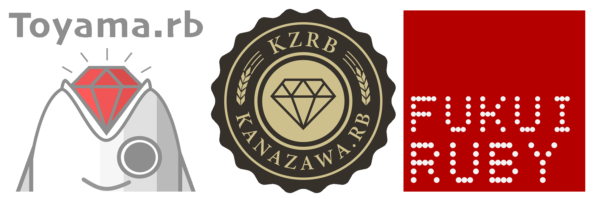

概要
開催日時: 2025年12月6日 (土) 11:00 ~ 16:45
懇親会: 17:45 ~ 19:45 (予定)
開催場所: 石川県立図書館 研修室
SNSハッシュタグ: #hokurikurk01
交通アクセス・マップ
金沢駅からはバスで20 ~ 30分かかります
Schedule
スケジュールは現在調整中で、変更の可能性があります。| 10:20 | 開場 (予定) |
| 11:00 ~ 11:10 | オープニングセッション |
| 11:10 ~ 16:35 | 調整中 |
| 16:35 ~ 16:45 | クロージングセッション |
| 17:45 ~ 19:45 | 懇親会 (予定) |
Sponsors
準備中Organizers
北陸三県で活動する三つのRubyコミュニティが合同で主催・運営を行っています。
